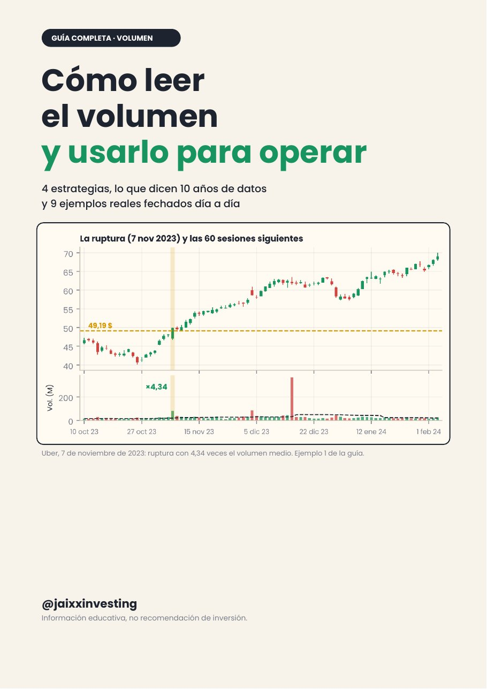
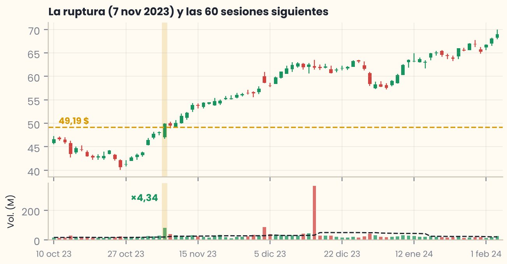
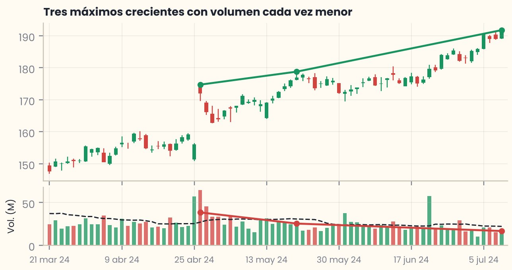

Guía gratuita · Análisis técnico
Cómo leer el volumen y usarlo para operar
Qué mide de verdad el volumen, cómo se lee y cuatro estrategias para usarlo: confirmar rupturas, la divergencia, el clímax de ventas y el OBV. Con lo que dicen 10 años de datos y 9 ejemplos reales, incluidos los que fallaron.
Descargar la guía en PDF
Qué vas a encontrar
- Qué es el volumen y qué no mide: en cada operación hay un comprador y un vendedor.
- Cómo leerlo en relativo, con la media de 20 sesiones, y qué eventos lo distorsionan.
- Las cuatro estrategias del vídeo, paso a paso, con un ejemplo de cálculo del tamaño de la posición.
- Lo que dicen los datos: probamos las señales en 49 valores durante 10 años, y no todo es lo que se repite en redes.
- Una checklist de ocho preguntas antes de operar.
- 9 ejemplos reales con dos gráficos cada uno: 4 que funcionaron y 5 que no.
- Los errores más frecuentes y la metodología completa.
Así se ve un ejemplo por dentro

Uber (UBER): ruptura del 7 de noviembre de 2023 con 4,34 veces su volumen medio; 60 sesiones después estaba un 38 % más arriba.

Alphabet (GOOGL): tres máximos crecientes con el volumen cada vez más bajo antes de la caída del verano de 2024.
Los 9 ejemplos
| Valor | Estrategia | Resultado |
|---|---|---|
| Uber | Ruptura con volumen · 7 nov 2023 | +38 % a 60 sesiones |
| Meta | Ruptura con volumen · 29 ene 2026 | Falla: −8 % a 60 sesiones |
| ETF del S&P 500 | Ruptura sin volumen · 18 feb 2025 | Falla: vuelve bajo el nivel en 2 días |
| Alphabet | Divergencia · 10 jul 2024 | Aviso: −19 % en 40 sesiones |
| ETF del S&P 500 | Divergencia · 16 feb 2021 | Sin consecuencias: −6 % |
| ETF del S&P 500 | Clímax de ventas · 7 abr 2025 | +24 % a 60 sesiones |
| UnitedHealth | Clímax de ventas · 17 abr 2025 | Falla: −36 % a 60 sesiones |
| Apple | OBV · 21 jul 2025 | +17 % a 60 sesiones |
| Microsoft | OBV · 4 dic 2024 | Falla: −8 % a 60 sesiones |